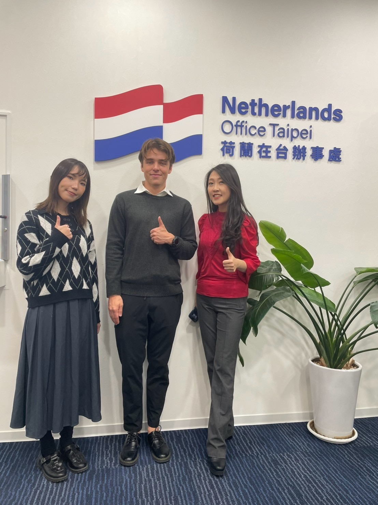

Flavors Without Borders環遊食界環遊食界Flavors Without Borders
Embassy food-tasting YouTube series · TAITRA, Food Taipei Mega Shows 2025
· Role: concept, proposal, embassy outreach, pre-production大使館美食試吃 YouTube 系列 · TAITRA 台北國際食品系列展 2025
· 負責：企劃發想、提案、大使館洽談、前期製作
One of Asia's largest food exhibition (1,700 exhibitors, 50,000+ visitors)
needed international visibility beyond trade ads —
something audiences would actually choose to watch.
亞洲最大的食品展之一（1,700 家參展商、超過 50,000 名觀眾），需要的不只是廣告曝光，而是觀眾真正想主動觀看的內容。
- 1Wrote the format設計節目形式
A host and embassy representatives taste-test the country's foods
— stories, games, Q&A. 30–45 min shoots cut to ~7 min episodes.主持人與大使館代表一起試吃該國美食，穿插故事、遊戲與問答。30–45 分鐘的拍攝剪成約 7 分鐘一集。 - 2Pitched 10+ embassies — 6 committed提案 10+ 間大使館 — 6 間承諾參與
Outreach to trade offices and missions in Taipei — from AIT and the Canadian Trade Office to the Netherlands, Czech, and Indonesia — including an in-person filming at the Netherlands Office Taipei.直接洽談台北的各國駐台機構 — 從美國在台協會、加拿大駐台北貿易辦事處，到荷蘭、捷克與印尼辦事處 — 並親自前往荷蘭在台辦事處拍攝。
- 3Cast a KOC host — on purpose刻意選擇 KOC 主持人
Past embassy collabs lived on KOL channels, so the audience never belonged to the brand. I hired a KOC host and a production partner instead — so every episode lives on the official channel and the audience compounds to the brand, not to a creator.過往的大使館合作影片都放在 KOL 的頻道上，觀眾從來不屬於品牌。我改聘 KOC 擔任主持人並敲定製作團隊 — 讓每一集都放在官方頻道，觀眾累積給品牌，而不是網紅。
- 4Planned the rollout規劃上線節奏
One episode every 1–2 weeks on YouTube, with teasers and behind-the-scenes on IG/FB via collab posts.每 1–2 週在 YouTube 上線一集，並以 IG/FB 合作貼文釋出前導與幕後花絮。
Honest footnote:誠實註記： I left TAITRA before filming began — the team produced and published the series on the blueprint I wrote.我在多數影片開拍前離開 TAITRA，但是團隊依照我撰寫的企劃藍圖完成拍攝與上線。



What pitching embassies taught me向大使館提案教會我的事
Lead with their outcome, not your content. Embassies didn't want
to "be in a video"
— they wanted their food culture in front of
50,000 visitors. Same idea, reframed, very different answer.先談對方的收穫，而不是你的內容。大使館要的不是「入鏡」，而是讓自己國家的飲食文化被台灣、海外觀眾看見。同一個想法，換個說法，答案完全不同。